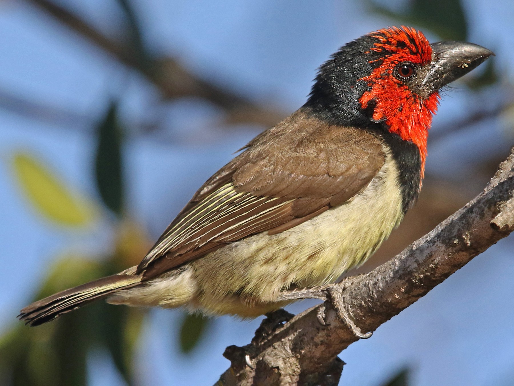

In the adult male, the forehead patch, hood, eyebrows, undereyes, coverts
auriculars, the cheeks as well as the throat and the top of the chest compose a united whole which varies from
red to orange-red and possibly even pink-red. A wide band of shiny black feathers forms a
kind of collar that encompasses the back of the hood, the posterior part of the earlobes and the sides of the neck
reaching the top of the mantle and descending to the middle of the chest. The central part of the back is
variably vermiculated with brown, black and pale yellow. The feathers have such large yellow tips that
the rump and uppertail coverts of some individuals sometimes appear completely yellow. The tail is brown
above, more grey-brown below with very fine yellowish borders at the level of the outer rectrices.
Size: 19cm
Weight: 44 to 73 g
Order: Piciformes
Family: Lybiidae
Genre: Lybius
Species: torquatus
Collared Barbicans are immediately recognizable by their loud duets accompanied by flapping wings
which can be transcribed as follows: "too-puddly, too-puddly, too-puddly". According to gender,
scores sound slightly different: males tend to produce low calls while those of
females seem more acute. These birds give the full performance of their voice during the parades of
cheers. During the latter, the main note is a clear and loud "tyaw", hardly lasting
than half a second and which is accompanied by squeaky "ddd" or "zzz". All group members are
attendees. Squeaky notes are also emitted during ritual food exchanges. For
communicate or keep in touch, collared barbicans deliver varied notes and long-lasting
distance "chchchch" or "tsh-sh-sh".